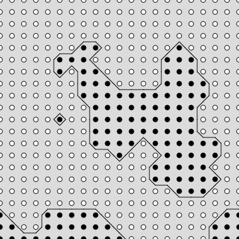
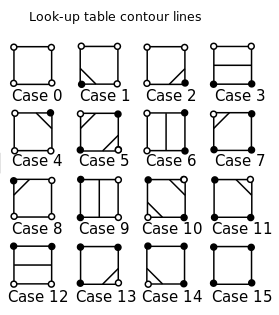
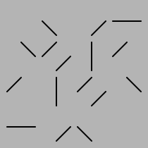
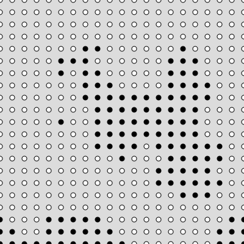
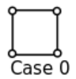
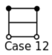

Back on the Commodore 64, running the one line BASIC program above was nerd-famous for being a simply idea that can build something complex. When run, it produces a maze-like design that represents generating complexity from a simple pattern.
It is essentially an infinite loop that randomly printed either a forward slash, or a back slash. The ending effect looks something like a maze.
Though it might not look like it, this is a grid problem. Click the canvas above and it will show the grid of boxes that is used to create the design (your sketch doesn't have to do this).
Open the CHMOD workspace, which is in charge of creating the design above.
To accomplish this, we are going to use a two dimensional loop to visit a grid of locations. At each location, use random() to help you choose between drawing a backslash or a front slash.
We are going to decide to make your generated xy-pair represent the center of the drawn slash. If the locations are spaced 16 pixels apart, I would expect to add or subtract 8 to help calculate any edge values.

Back-slash: line( x - 8, y - 8, x + 8, y + 8)
Front-slash: line( x + 8, y - 8, x - 8, y + 8)
Since we are generating the centers of each line, your nested loop should start x and y at 8, instead of the usual 0. Otherwise you will notice things are shifted a little bit.
Since the above strategy chooses randomly which line to draw, you will only want to draw() one frame. Otherwise you will generate a new 'maze' every single frame, which will cause visual chaos. The call to noLoop() in setup make sure that you won't be repeatedly re-randomizing the design.
The strategy used for the CHMOD design before was not terrible, but we can take another approach that uses the rotational symmetry of our two new choices.
The front-slash is simply a 90 degree rotation of the back-slash
Open the CHMOD with Rotation workspace, and the first thing that you should do is copy your previous CHMOD solution there.
Here we are going to produce the same design, but using a slightly different trick. We will be modifying it to use a translation/rotation style of drawing. This means that we should:
1) Translate to the location that you are drawing. Modify your nested loop so that it starts by translating to the generated (x,y) location
2) Rotate to the angle you want. Your current code is randomly choosing from two options. Modify it so that the result of your random choice is either rotate(90) or rotate(0).
3) Draw your image, centered at (0,0). After your if statement has chosen to rotate (or not!), draw a single line that is centered at (0,0). If you your spacing is 16, it would be: line(-8, -8, 8, 8)

4) resetMatrix() before your loop moves on to the next location. Otherwise all of the translations will start to add up.
After making all of these changes, running your program and you should get the same CHMOD design as before. The remainder of our designs will rely on the translation/rotation style of drawing to get their designs
Truchet tiles are set of square designs that have some sort of rotational symmetry that allows them to fit together to make a more complex design. Perhaps the most famous Truchet Tiles are the four ways of filling half of a square with a triangle:

These tiles can be combined in different orders to create more complex designs.

For this assignment we are going to make some different Truchet tiles by creating sets of tileable designs, then loop though and randomly apply them to the screen.

Looking at the provided tiles, you can see that they really aren't four different tiles. Instead of using many if statements to help us draw a tile four different ways, we draw one tile and rotate it to the position that we need.
This means that we can cut some corners by using the rotate() function when drawing. For that to work, we have to switch our mindset:
- translate() to the drawing location
- rotate()
- draw centered around (0,0)
Open the Truchet Starter workspace, which comes filled with code to help us design our tiles.
Our first goal will be to complete the tile() function, which accepts a number as a parameter, and paints a different tile for each of the numbers 0 - 3. The initial setup of the draw() function is to call tileTest(), which is a helper function that calls the tile() function four times, each time with a different parameter.
Running the sketch will show the four calls to tile() spread across the canvas. Since the tile() function is currently empty, they draw nothing on the canvas, but there is a little bit extra in the tileTest() function that will show a rectangle around the expected

The red squares are provided by the tileTest() function to provide an outline while designing, but it will not show up in our final design.
Notice that there are two constants provided at the top of the program:
const TILE_SIZE = 24;
const NUM_TILES = 4;
Using const instead of let makes a variable that can only ever hold one value. The value is established in the beginning, and you will not be allowed to change it using code.
The purpose of these constants is to act as the 'settings' of the sketch. If you change their values and run the sketch again you will see that you can affect the size of the tiles or the number of expected tiles. As we design the tile() function we want to keep the TILE_SIZE variable in mind.
To create a rotatable tile, we need to center it around the location (0,0). Since we are trying to keep the TILE_SIZE variable as our size, we need to range from -TILE_SIZE/2 to TILE_SIZE/2.

This is a little annoying to work with. We could declare some variables to help them make more sense:
let topY = -TILE_SIZE/2; let leftX = -TILE_SIZE/2; let botY = TILE_SIZE/2; let rightX = TILE_SIZE/2;
This will allow us to reimagine the drawing space using variables with related names.

The triangle function takes six parameters to represent the three corner's coordinates. We can use our new variables to draw our first tile:
triangle(leftX, topY, rightX, botY, leftX, botY);
After adding this line to the tile() function, run the sketch to make sure that it shows up in all four locations.
The last thing to do with the tile() function is to use rotate() to help generate four different tiles.

Our current tile() function draws tile A. Add rotate(90); as the first line of tile() and run the sketch again. Notice that all of the tiles are now tile B. You could use 180 and 270 to help you generate the last two tiles.
But the tile() function is supposed to respond to the num parameter, which could be 0 - 3. Modify the tile function so that it chooses how much to rotate based on the value of num. This could be done using if statements, or math. If you've done it correctly, running the sketch should show all four designs on the canvas.
Now that your tile() function works, move to the draw() function and delete the call to tileTest(), causing the canvas to be blank when run.
Your next task is to use the tile() function to fill the entire canvas. Use a nested loop to help generate a grid of locations, and for each location you should:
- translate() to that location
- Generate a random number (0 - 3), and call tile() with it as the parameter
- resetMatrix() before moving on to the next location.
Make sure that you are respecting the TILE_SIZE variable. To be centered properly, your locations should start at TILE_SIZE/2 and be TILE_SIZE apart.

The pattern above is created using only two tiles:

Again, this is really just one tile that is rotated 90 to generate a second tile.
Open the Squiggly Truchet workspace, which starts where the last sketch did. There is a tile() function that is meant to draw different designs depending on the num parameter. This time there are only two possibilities: 0 and 1, so the NUM_TILES constant is now 2 to represent our current situation.
To draw this design in the tile() function, you are going to need to make use of p5's arc() function. An arc is just a section of an ellipse, and the two drawing functions are similar. Assuming that we have already declared these variables:
let topY = -TILE_SIZE/2; let leftX = -TILE_SIZE/2; let botY = TILE_SIZE/2; let rightX = TILE_SIZE/2;
Add the following to the tile() function:
noFill(); ellipse( leftX, topY, TILE_SIZE/2 , TILE_SIZE/2);
Running this will reveal a circle drawn around the upper-left corner of the two squares:

This is a little too much of the circle. We want to contain our design a little bit, otherwise the overlap will ruin our design.
The arc() function is how we can draw only the portion of the circle that is inside the square. We just need to know the starting and stopping angles to use. Zero degrees is directly to the right of center, and angle increase as we go counterclockwise. This means that the arc we want to draw starts at 0 and stops at 90. Replace the ellipse with this:
arc( leftX, topY, TILE_SIZE/2 , TILE_SIZE/2, 0, 90);
Now you should see that the tile() function is contained within its designated square.
Your job is to complete the design
- Draw the other arc, which is centered on the other corner, and goes from angle 180 to 270.
- Use rotate() to help you generate the other tile
- Modify draw() to tile the entire canvas, very similar to the last sketch.

This is a variation of the previous pattern, but this time there are several arcs making ribbons, causing a bit of an overlapping effect.
Open the Ribbon Layers workspace, which we will again be first creating a tile() function, then looping and drawing it everywhere.
This time the design has the following tiles:

A key difference to this situation is that we are drawing several arcs, each with a different radius. So this time, instead of drawing a single arc that is simply TILE_SIZE/2, we are going to need to focus on creating several arcs of varying radii. We're trying to fit four arcs in our tile, so they should have radii: 0.25*TILE_SIZE, 0.50*TILE_SIZE, and 0.75*TILE_SIZE, and TILE_SIZE. You may use a loop to do it, or write each of the arcs by hand.
Marching Squares is a computer graphics technique for creating two dimensional shapes from a scalar field, which is exactly what our noise() function provides.
- First we will use the idea of a threshold with our noise() field to determine which locations should be included.
- Then we will use marching squares to encapsulate them with a border.
- If we stop drawing the dots, we will be left with our shape.
 -->
-->

-->
One major ability that we will need is to draw lines that are separating the dots that we create. Before we start generating those dots, we are going to perfect the drawing function.
The key to a Marching Squares algorithm is to break the entire canvas into squares, each with a corner at one of the key points. If you consider every combination of black/white dots, you will end up with 16 possible lines that you may have to draw.

The Marching Squares sketch comes with a function whose entire purpose is to draw the line within one square: drawCase(). The draw() function comes prefilled with a call to drawAllCases() to help test your function. When run as it is, it looks like this:

function drawCase(c, x, y, size)
Notice that the drawCase() function takes in a lot of parameters: the case number, c, and an x ,y, and size that are meant to represent the location and size of their square. Currently, all the function does is draw the square and the case number. This is why the image above looks like that.
We are going to use it as a reference to make sure that our finished drawCase() covers all possibilities, and then remove the rectangle and text that are there.
 -->
-->

The drawCase() function is essentially a large if-chain that looks at the c parameter to see which case we're dealing with, and then responds by drawing the appropriate line.
Notice that when the lines are drawn, they attach two midpoints in each of the rectangles. Since these points are halfway through our shapes, I will expect a lot of x + size/2 or y + size/2 in our lines.
For example, when the case is 3, the line is horizontal

Since we are in corner mode x represents the left side, while x + size represents the right. Both ends of this line are halfway down the square, which is a y value of y + size.
Left Point: (x, y + size/2)
Right Point: (x + size, y + size/2)
Since we only want this to happen when the case is three, we need to use an if statement focusing on the c variable.
if( c == 3 ){ //In Case 3
let x1 = x;
let y1 = y + size/2;
let x2 = x + size;
let y2 = y + size/2;
line( x1, y1, x2, y2 );
}
This uses four extra variables for organization, but they are not required.
Note that there are only eight unique patterns of lines. Everything past case 7 are duplicates of another one. So you could rewrite the above if statement as if( c == 3 || c == 12) to take care of two situations at once.
Your job now is to add the seven remaining if statements representing all of the other cases. Do them one/two at a time and check with the references above to make sure that you end up with the correct lines.
Once you've finished, remove the text() and rect() from your drawCase() function to leave just the line drawing.
-->
The draw function is calling drawAllCases() for the purpose of being able to look at every case at once. After verifying that all cases are drawn properly, remove the call to drawAllCases() from draw(). This should leave you will a blank canvas when you re-run the sketch.

Now that we have a drawing function, we need to generate a grid of values for us to work with. If you look at the dots in image above,you'll see that they are not random. They are clustered together because they are generated using a noise() field. But noise() values are decimals from 0 to 1. In order to get the proper yes/no for each location, we're going to need to use a threshold to determine if the dots should be 'included' or not.
The first thing that we will do is try to create a function that will look at a certain location in the noise field and return a boolean if it is larger than a threshold.
While still working in the 'Marching Squares with Noise' workspace, add the following function to it along side the setup(), draw(), and drawCase() functions:
//returns true if the given location is above the threshold
function thresh(x,y){
//get the noise value associated with x,y
let n = noise(x*0.01,y*0.01);
//return true or false based on the value of n
}
This function takes a location (x,y) and determines its corresponding noise value. Since a noise() value is between 0 and 1, we'll decide that the threshold is 0.5.
Your task is to finish the the thresh() function so that it returns true if the n value is above 0.5, return true. Otherwise return false.
To test your function, put the following in draw(). This should replace the loops that were previously there to help create the drawCase() function, so make sure you've finished that one first.
if( thresh(mouseX,mouseY) )
fill(255);
else
fill(0);
circle(mouseX,mouseY,40);
Remember that if a function returns a boolean, it may be used to directly run an if statement. This if statement is using the thresh() function in an if to check if the mouse's location is above the threshold. A circle is then drawn at the mouse location using the chosen color. This should allow us to hover over a location on the screen and see if it is above or below the threshold
When you run your sketch, wave the mouse over the canvas and make sure that the circle changes from black to white. It should not be randomly flashing, instead certain areas of the sketch will be black and the rest be white.
With the thresh() function working, it's time to draw the whole grid using it. Use a nested loop to visit a grid of (x,y) locations. Mine are 20 apart, but you may choose your own spacing. Use an if statement to choose the fill of the color of each circle.
When run, a grid of dots should appear. Like the image at the top of the page, but different values. They should be semi-grouped together instead of completely random.
Now that we have the grid of dots and a function to help draw the lines, we can complete the Marching Squares algorithm by incorporating the functions together.
Inside your loop you are currently drawing a single circle each time. The intention will be to simultaneously use the drawCase() function to draw the lines. Before we make it perfect, we can make sure that we can get it to draw something at each location. From there we can worry about exactly what.
Remember that drawCase takes in a lot of parameters representing the case, x, y, and size. Go to the nested loop inside the draw() function and use your looping x/y variables to also call the drawCase() function with this line of code:
drawCase( 1, x, y, 20 ); //Draw case 1, of size 20, at every (x, y)
The x and y are the variables that change each time, but here we are always drawing case 1, of a size 20. Since you are always drawing the same case, it should look very repetitive:
To make things easy, we drew case 1 every time we used the drawCase() function. The last thing that we need to do is replace that 1 with a value that is actually derived using the location.
As we visit each location and draw dots, we are also going to want to draw the lines surrounding them. This means that we are going to have to determine which case that is associated with each location.
The thresh() function can be used to analyze any single location, but in order to determine the case we will need to look at the four different locations that make up our square.
This means that we will not only care about the threshold at (x,y), but also the other corners. If our squares have a size of 20, the other points would be: (x + 20, y), (x, y+ 20), and (x+20, y + 20).
The cases are chosen in a way that is very binary friendly. Each of the four corners is given a value:
- bottom-left is worth 1
- bottom-right is worth 2
- top-right is worth 4
- top-left is worth 8
The case is the sum of those values that are above the threshold.
For example, all corners for Case 0 are white, therefore nothing gets added.

But case 12 has the top two values are black, so we add 8 and 4 to get 12.

We know the four locations that we are interested in are (x,y), (x+20, y), (x, y+20), (x+20, y+20), and we know that the thresh() function will tell us if they pass the threshold or not. Consider the code below:
let sum = 0; if( thresh( x,y ) ) //if the location x,y is above the threshold, add eight to the sum variable sum += 8;
After this code runs, there are two possibilities for the sum variable. If the thresh() returned a true value for location (x,y), sum will end at 8. If not, sum will remain at zero. By doing this we are giving the location (x,y) a weight of 8 in our overall sum.
You will need to do something like this during your loop, as you visit each (x,y). To finish the sum you will need three more if statements similar to the one given. Each time you should focus on one of the different corner points and add the related value 4, 2, or 1. After all four if statments the sum's value should be the correct case. Modify the call to drawCase() to use it instead of the previous 1.
drawCase( sum , x, y, 20 ); //Draw case determined by sum, of size 20, at every (x, y)
If done properly, running your sketch should now produce a line that separates the groups of values.
If you comment out the line where you draw the circles, you will be left with just the outline, producing the image on the right.
Our noise() grid only uses two of the three possible parameters that you could give a noise() function. If we use frameCount to help the third parameter be different every time, we can get a slightly different noise space each time. In the thresh() function is where you have a line generating a noise value:
let n = noise(x*0.01,y*0.01);
Modify it to include the frameCount as the third parameter:
let n = noise(x*0.01,y*0.01, frameCount*0.003); //Make 0.003 bigger or smaller to change speed
After this change, you should see the outlined shape morphing a little bit.
We chose a size of 20 to use when deciding how far apart the dots should be. If you want a smoother shape, you can modify your code to be a smaller value, like 4.
Keep in mind that the noise() function is heavy, so as some point your browser will start to lag.